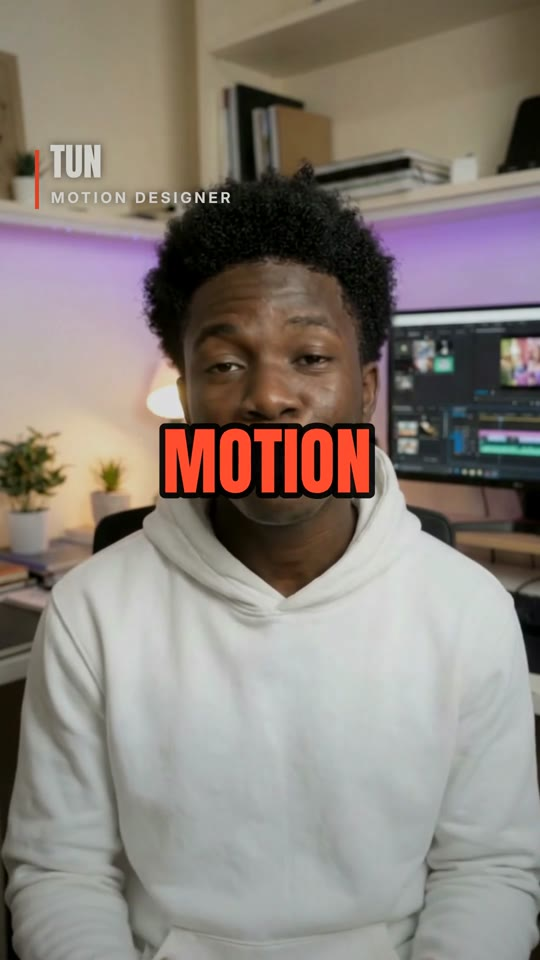
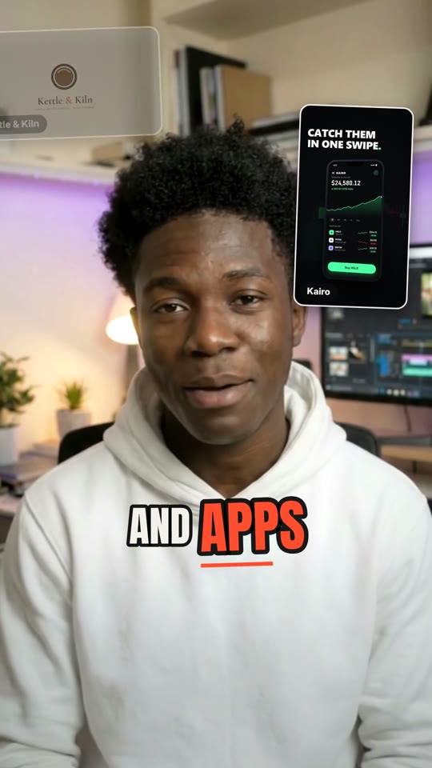
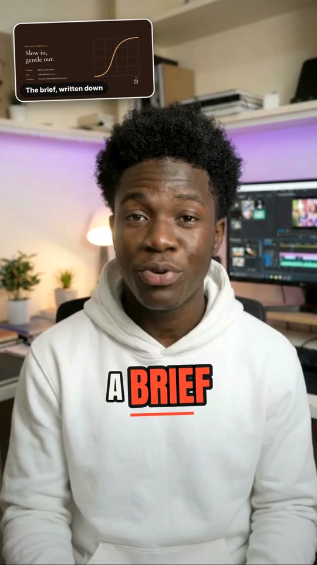
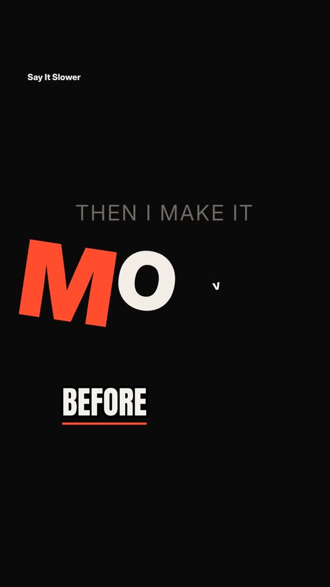
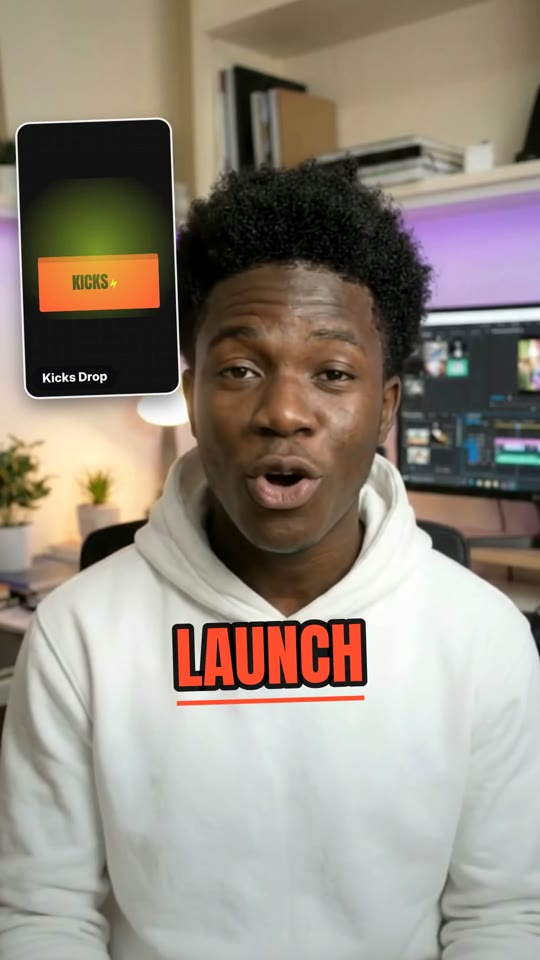
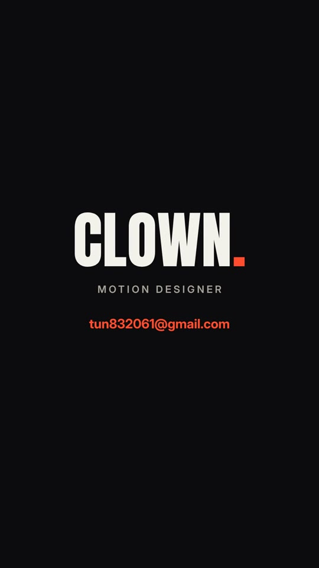

A creator-style talking-head edit that introduces me: three takes cut on the words, with animated captions, punch-ins, a name lower third and cut-aways to the projects I mention.
Format23s · 9:16
RoleScript, edit, captions, graphics and sound
BriefSelf-initiated
Year2026
Edited · 9:16Raw takes vs the edit, same cuts
The brief
Turn three plain, locked-off takes into a short intro people watch to the end. Built 9:16 first, captions that read with the sound off, and every project I mention shown on screen as I say it.
My role
Script, edit, captions, graphics and sound.
Self-initiated brief: Behind the Frame is a fictional project made for this portfolio. The presenter footage was generated with AI (Google Flow) from a reference image of me. The script, edit, captions, graphics and sound design are mine.
Process
Styleframes

A name lower third and the first caption, so you know who is talking in the first second.

Projects pop up as they are mentioned: Kairo appears on the word “apps”.

The cards sit above and beside the speaker, never over the face.

On “before anything moves”, a full-screen cut to Say It Slower’s MOVE.

Captions are kinetic: each word pops in as it is spoken, and key words grow and turn orange.

It ends on the same end card as the showreel, with the email.